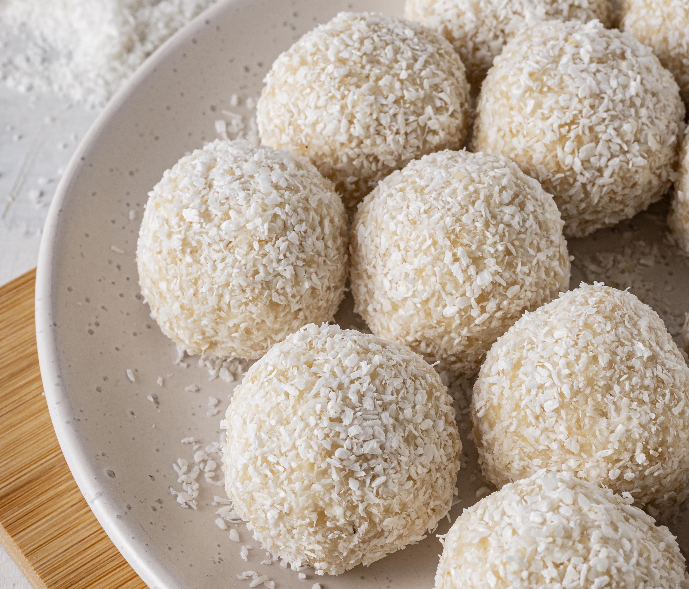

Beijinho ("little kiss" in Portuguese) is another beloved Brazilian sweet treat, often served at celebrations and gatherings.
This treat is creamy and rich, with a delicate coconut flavor that balances the sweetness of the
condensed milk.

Ingredients
14 oz of sweetened condensed milk
1 cup of unsweetened, shredded coconut
1 tablespoon of butter
1/4 cup of heavy cream
20 whole cloves for decorating (optional)
Steps
Add the condensed milk, the butter, 1/2 cup of the coconut and the cream
to a medium sauce pan and place it over medium heat.
Cook, stirring repeatedly, until you scrape the bottom of the pan, and the mixture takes 3
seconds to come back to its place.
Pour onto a plate and let it cool.
Butter your hands and shape the fudge into balls.
Roll the balls on the remaining shredded coconut.
Insert a whole clove to each ball to decorate (remove the clove before eating).